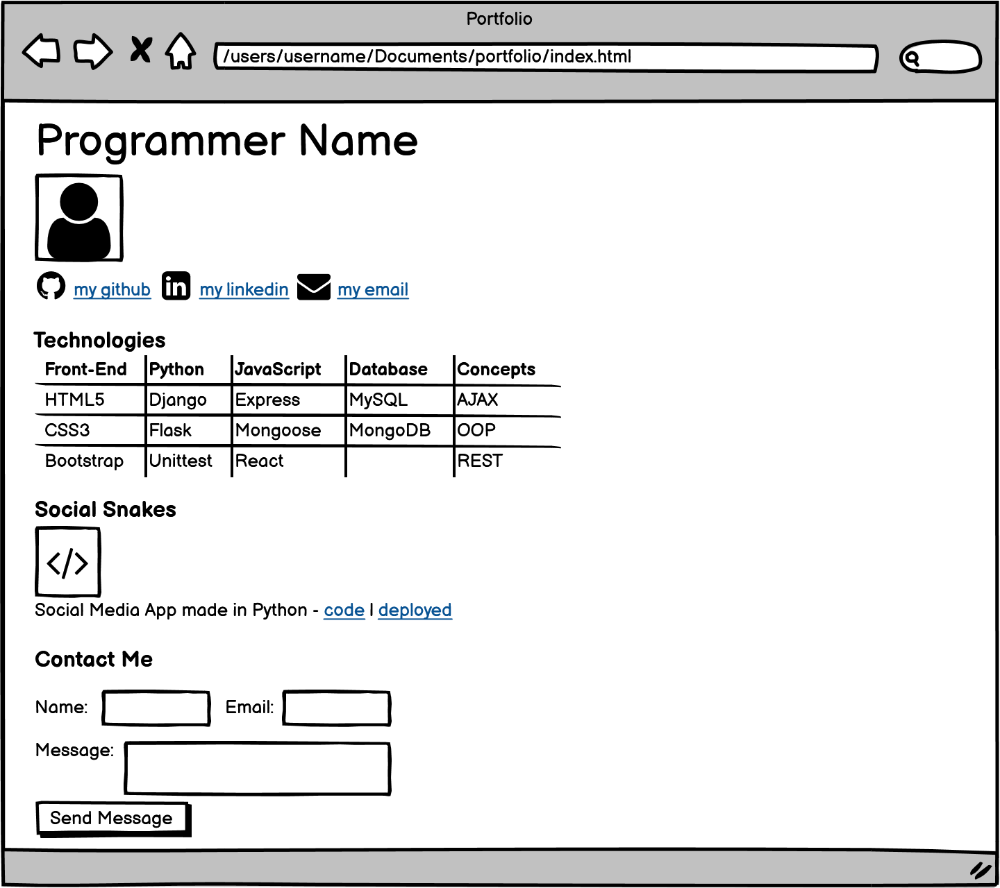

If I've created my code correctly, even within the zipped file this should be able to link to the page. The folder denomination method would still apply as long as it is named correctly.
The purpose of this was to learn how to refer to other webpages internally with our files. The same idea was applied to sourcing images and referring to links.
I've added in a small section here where I made a checklist for myself while creating the original file. It was a way to keep track of what else is left to do and not have to keep changing tabs.
Look at list below or RETURN TO PORTFOLIO
Sample Submission from Learn Platform 